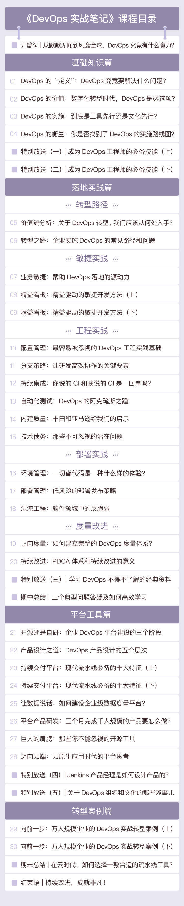

- 00 开篇词 从默默无闻到风靡全球，DevOps究竟有什么魔力？.md.html
- 01 DevOps的“定义”：DevOps究竟要解决什么问题？.md.html
- 02 DevOps的价值：数字化转型时代，DevOps是必选项？.md.html
- 03 DevOps的实施：到底是工具先行还是文化先行？.md.html
- 04 DevOps的衡量：你是否找到了DevOps的实施路线图？.md.html
- 05 价值流分析：关于DevOps转型，我们应该从何处入手？.md.html
- 06 转型之路：企业实施DevOps的常见路径和问题.md.html
- 07 业务敏捷：帮助DevOps快速落地的源动力.md.html
- 08 精益看板（上）：精益驱动的敏捷开发方法.md.html
- 09 精益看板（下）：精益驱动的敏捷开发方法.md.html
- 10 配置管理：最容易被忽视的DevOps工程实践基础.md.html
- 11 分支策略：让研发高效协作的关键要素.md.html
- 12 持续集成：你说的CI和我说的CI是一回事吗？.md.html
- 13 自动化测试：DevOps的阿克琉斯之踵.md.html
- 14 内建质量：丰田和亚马逊给我们的启示.md.html
- 15 技术债务：那些不可忽视的潜在问题.md.html
- 16 环境管理：一切皆代码是一种什么样的体验？.md.html
- 17 部署管理：低风险的部署发布策略.md.html
- 18 混沌工程：软件领域的反脆弱.md.html
- 19 正向度量：如何建立完整的DevOps度量体系？.md.html
- 20 持续改进：PDCA体系和持续改进的意义.md.html
- 21 开源还是自研：企业DevOps平台建设的三个阶段.md.html
- 22 产品设计之道：DevOps产品设计的五个层次.md.html
- 23 持续交付平台：现代流水线必备的十大特征（上）.md.html
- 24 持续交付平台：现代流水线必备的十大特征（下）.md.html
- 25 让数据说话：如何建设企业级数据度量平台？.md.html
- 26 平台产品研发：三个月完成千人规模的产品要怎么做？.md.html
- 27 巨人的肩膀：那些你不能忽视的开源工具.md.html
- 28 迈向云端：云原生应用时代的平台思考.md.html
- 29 向前一步：万人规模企业的DevOps实战转型案例（上）.md.html
- 30 向前一步：万人规模企业的DevOps实战转型案例（下）.md.html
- 期中总结 3个典型问题答疑及如何高效学习 (1).md.html
- 期中总结 3个典型问题答疑及如何高效学习.md.html
- 期末总结 在云时代，如何选择一款合适的流水线工具？.md.html
- 特别放送（一）成为DevOps工程师的必备技能（上）.md.html
- 特别放送（三）学习DevOps不得不了解的经典资料.md.html
- 特别放送（二）成为DevOps工程师的必备技能（下）.md.html
- 特别放送（五）关于DevOps组织和文化的那些趣事儿.md.html
- 特别放送（四）Jenkins产品经理是如何设计产品的？.md.html
- 结束语 持续改进，成就非凡！.md.html
- 捐赠
00 开篇词 从默默无闻到风靡全球，DevOps究竟有什么魔力？
你好，我是石雪峰，目前在京东商城负责工程效率体系建设和平台研发。从业十多年，我一直在软件行业深耕，尤其是从2015年接触DevOps至今，我一直在企业内部从事DevOps的落地实践工作，也曾帮助多家大型企业进行DevOps的相关能力评估，积累了很多实战经验。
在写开篇词的时候，我才意识到，DevOps从诞生至今已经整整十个年头了。十年之间，DevOps从默默无闻到风靡全球，很多人都在反思和总结DevOps究竟有什么魔力。
十年前的2009年，我在一家日本软件公司工作，长期被外派到日本尼康公司做项目。虽然当时敏捷已经兴起，但在日本，软件开发还是瀑布模式的天下。每当一个新项目来临时，我们经常不分白天黑夜地埋头苦干几个月，完全不敢想象，如果不能顺利交付会怎么样。
可是，怕什么就来什么。有一次，我负责开发一款客户端软件，给客户交付的方式是事先刻录一张光盘，把光盘带去现场，一边部署，一边演示。刚开始还挺顺利的，可是到了生产数据拉取的环节，系统竟然异常退出了。我至今都还记得那位项目负责人不满的表情。
调试后我发现，客户的生产环境使用的是Oracle数据库，而我们使用的是微软的Access数据库，数据访问协议不一致，数据自然会同步失败。
之后的三个月，我总共休息了两天，每天的节奏就是吃饭睡觉写程序，干到搭乘最后一班电车回家，唯一的娱乐活动就是在吃加班餐的时候吐槽老板。
所以，当时我就在想，一定会有一种更好的软件开发方式，在这种方式下，团队间沟通和协作的重要性一点也不亚于写代码、写文档、做测试之类的常规工作。但我不知道的是，远在大洋彼岸，DevOps的旅程才刚刚开始。
十年后，也就是2019年，以移动互联网、云计算、微服务、大数据、人工智能等为代表的技术日新月异，技术的迭代和演进都在以十倍速的方式向前发展，数字化转型浪潮正在席卷各行各业。“软件正在吞噬世界”“每一家企业终将成为软件企业”……行业领袖口中的这些预言，都在慢慢地变成现实。
如今，软件正在深刻地改变着我们的生活方式。前段时间，我去新疆旅行。在旅行途中，我发现即便是在沙漠边缘的小镇，微信支付也是畅通无阻。另外，用户喜新厌旧的成本已经低到可以忽略不计，企业之间的竞争已经升级为软件即服务的竞争。
所以，如何快速地持续交付高质量的软件，满足用户的多样化需求，并借此提升企业的利润和市场占有率，已经成为企业必须要面对的现实问题。
可问题是，现在很多企业采用的软件开发方式，同十年前我所在的公司其实并没有什么区别，甚至由于组织分工的细化，内部沟通的消耗成本更加高昂。
你应该也遇到过这样的场景吧？两个部门为了数据打通，来回拉锯，各种方案和排期一天一个样，还美其名曰“PK”。原本特别简单的一件事情，非要扯上几天甚至几周才能有点眉目。每当这个时候，我都忍不住想说：“嘿，兄弟，我不是来抢你饭碗的，我只是想通过系统间的打通来简化一些工作而已，何必搞得这么复杂呢？”
所以你看，软件开发过程的改进，除了依赖于技术进步，还依赖于流程、理念、文化等全方位的改进，而这正是DevOps带给软件开发方式的一场革命。
从2017年DevOpsDays大会北京站举办以来，DevOps在国内的发展正式驶向了快车道。作为从业者之一，我深刻地感受到DevOps的影响力与日剧增，不仅仅是互联网行业，就连传统的电信、金融，甚至是政府机构，也都把DevOps作为核心能力在快速建设。
现在已经很少有人会问DevOps有什么用、DevOps是否适合我之类的问题了，更多人开始关注要如何落地实践DevOps，并且让DevOps充分发挥它的价值，真正改善软件交付方式，提高IT工程师的幸福指数。
除此之外，越来越多的企业开始招聘DevOps方面的人才，对DevOps的技能和经验背景的要求越来越高，DevOps专家的岗位薪资甚至仅次于高级管理层，一跃成为IT行业的金字塔顶端。
我个人认为，DevOps已经成为了所有IT从业人员应知应会的必备技能。在这些技能中，技术和实践当然非常重要，但文化和理念更是尤为珍贵。如果每个从业者都认同DevOps的文化和理念，认同快速交付价值远胜于部门间的零和博弈，认同我们应该共享一个目标，并从自身做起持续改善上下游的关系，那么，怎么可能还会出现刚刚我提到的PK的例子呢？
也许你从各种渠道了解过DevOps的相关信息，但是因为市场上资料庞杂、个人精力有限等原因，还存在着以下几个困惑：
- 如何梳理出一套清晰的DevOps理念和完整的知识体系？
- 如何获得一线大厂的实践经验，让DevOps真正落地？
- 如何获得一条渐进式的DevOps学习曲线，让自己在正确的方向上不断增值？
这些问题，正是多年来我一直在思考的，也希望在这个专栏中传递给你的核心内容。
学习DevOps的过程，对你来说将会是一场探索之旅。DevOps涉及软件开发的方方面面，因此，你将漫步于需求、开发、测试、运维的完整开发流程，途经管理实践和工程实践的领域，探寻方法论、最佳实践和工具平台的有机结合方式，让自己在全栈工程师和斜杠青年的道路上更进一步。
DevOps涉及的领域如此之广，想在一个专栏中学遍所有内容几乎是不可能的事情，所以我从实战的角度出发，臻选出最重要的内容，帮你梳理出一条DevOps的最佳学习路径。
本专栏主要由4个部分组成。
- 第1部分是“基础知识篇”。我将详细介绍DevOps的定义、价值、实施与衡量，在最开始帮你建立起正确的DevOps体系认知。
- 第2部分是“落地实践篇”。这一部分占据整个专栏一半的篇幅，是最核心的部分。我将带你通盘梳理DevOps的转型路径，你一定不要错过。
- 第3部分是“平台工具篇”。它涵盖平台建设的3个阶段、产品研发和设计、不可忽视的开源工具等，帮你找到快速搭建平台的钥匙。
- 第4部分是“转型案例篇”。我将分享1～2个实际案例，将前面提到的理论、落地实践和工具融入其中，让你能够融会贯通。
另外，我还设置了特别放送环节。在这个环节，我会跟你分享一些经典的学习资料、DevOps工程师的必备技能等内容，让你全方位、多层次地掌握DevOps。

其实，整个专栏的整理和写作，对我来说也是一场修行。毕竟，作为DevOps多年的实践者，我在用它解决问题的同时也发现了更多的问题，好奇心和对效率建设的执着追求让我乐此不疲。现在能够静下心来，把我多年的经验与反思整理出来跟你分享，也是一件非常有意义的事情。
在这个过程中，我也越发地感受到，DevOps的思想和文化的落地依然任重道远。每个时代都会有一群先锋走在时代的前沿，中流击水，鹰击长空，希望通过本专栏的学习，你也可以成为DevOps的思想者和实践者，实现个人价值和企业价值的双赢。
最后，我想请你聊一聊，关于DevOps，你都有哪些困惑？对于专栏，你又有哪些期待？欢迎你写在留言区，我们一起交流，期待你的反馈。
好了，从现在开始，就让我们一起踏上这场DevOps的奇妙旅程，一路同行，不断进步。
© 2019 - 2023 Liangliang Lee. Powered by gin and hexo-theme-book.